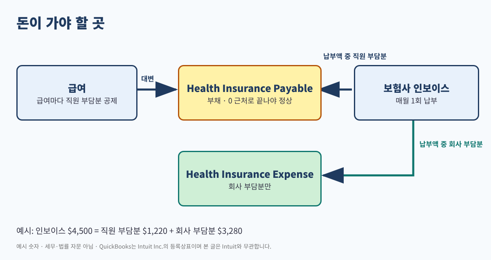
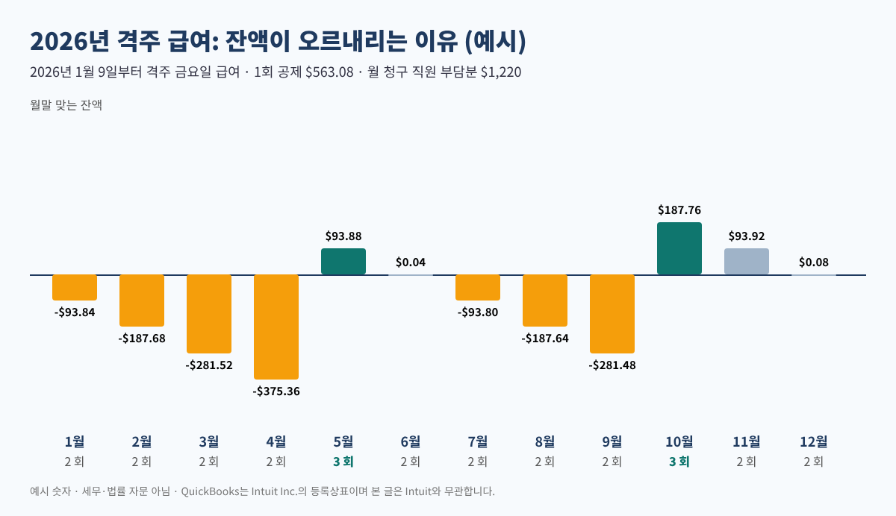
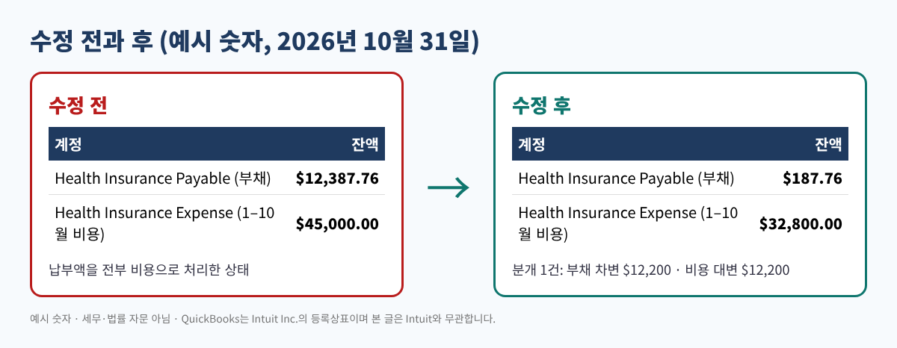

QuickBooks 건강보험 부채 계정이 0이 안 될 때: 급여 공제와 보험료 납부 맞추는 법
직원 건강보험료 일부를 급여에서 공제하고, 매달 보험사 인보이스는 회사가 냅니다. 이론상 그 공제액이 쌓이는 부채 계정은 0 근처에 머물러야 합니다. 그런데 연말에 대차대조표를 열어 보면 Health Insurance Payable(또는 Payroll Liabilities: Health Insurance)에 수천 달러가 남아 있거나 마이너스로 찍혀 있고, 어느 달부터 틀어졌는지 알 수 없는 경우가 많습니다.
QuickBooks 사용자 커뮤니티에서도 Desktop·Online 가리지 않고 같은 질문이 반복되지만, 답은 대개 "납부를 어떻게 기록했는지에 따라 다르다"에서 끝납니다. 이 글은 직접 따라 할 수 있는 방법을 정리했습니다. 엑셀이나 구글 시트로 월별 대사표를 만들고, 정상적인 시차와 실제 오류를 구분하고, 수정 분개 1건으로 정리하는 순서입니다. 연말에는 급여 보고서, W-2, 세무 담당자가 모두 이 잔액을 보게 되므로 지금 맞춰 두는 것이 좋습니다.
이 글은 일반적인 장부 정리 정보이며 세무·법률·급여 자문이 아닙니다. 본인 상황은 자격 있는 전문가와 확인하세요.
이 계정은 원래 이렇게 움직입니다
부채 계정에 닿는 것은 두 가지입니다. 급여를 지급할 때마다 직원 공제액이 이 계정에 대변으로 쌓입니다. 보험사에 납부할 때는 인보이스 중 직원 부담분만큼만 이 계정을 차변으로 줄여야 하고, 나머지 회사 부담분은 건강보험 비용이 됩니다.

계정이 정리되지 않는 원인은 대개 다음 중 하나입니다.
- 납부액 전부를 비용으로 처리: 부채는 공제액만큼 매달 커지고, 비용은 같은 금액만큼 부풀려집니다.
- 납부액 전부를 부채로 처리: 회사 부담분만큼 부채가 마이너스가 됩니다.
- 격주·주급 급여: 급여가 세 번 나가는 달이 있어 공제액과 인보이스가 달마다 맞지 않습니다.
- 가입자 변동: 신입 직원이 공제 시작 전에 청구되거나, 퇴사자가 인보이스에 남았다가 나중에 환급됩니다.
- 납부 시점: 늦게, 일부만, 두 번, 또는 미리 납부한 경우.
- QuickBooks Desktop만 해당: Pay Liabilities 대신 Write Checks로 납부해서 급여 부채 보고서가 정리되지 않는 경우.
1단계: 대사 기준일을 정하고 자료 세 가지 준비
- 대차대조표(Balance Sheet): 월말 기준일(예: 10월 31일)의 건강보험 부채 잔액을 마이너스 부호까지 그대로 적습니다.
- 급여 공제 내역 (지급일 기준): 급여 보고서나 급여 업체 자료에서 1월부터 기준일까지 매달 직원 건강보험 공제 합계.
- 보험사 인보이스와 납부 내역: 매달 인보이스 총액, 그중 직원 부담분(단체보험 인보이스에 나오는 경우가 많고, 없으면 직원별 부담분 합계), 그리고 어떤 인보이스를 언제 얼마 냈는지.
2단계: 월별 대사표 만들기
스프레드시트에 한 달에 한 줄씩 적습니다. 1행은 제목, 데이터는 2행부터입니다.
| 열 | 들어갈 내용 | 수식 (2행) |
|---|---|---|
| A 월 | 1월, 2월 … | 직접 입력 |
| B 인보이스 총액 | 보험사 인보이스 | 직접 입력 |
| C 직원 부담분 | 그 인보이스의 직원 몫 | 직접 입력 |
| D 급여 공제액 | 그달 급여에서 공제한 금액 | 직접 입력 |
| E 납부액 | 그 인보이스에 낸 금액 | 직접 입력 |
| F 납부한 직원 부담분 | 납부액 중 직원 몫 | =IF(B2=0,0,ROUND(C2*E2/B2,2)) |
| G 맞는 잔액 | 누적 부채 잔액 | =N(G1)+D2-F2 (아래로 복사) |
표 1. 월별 대사표. 2행의 N(G1)은 제목 칸을 0으로 처리합니다. 1월 1일의 맞는 잔액을 알면 그 값을 더하세요.
G열의 마지막 값이 기준일의 맞는 잔액이고, QuickBooks 잔액에서 이 값을 뺀 것이 고칠 금액입니다. 직원 4명, 2026년 1월 9일부터 격주 급여, 월 인보이스 $4,500 중 직원 부담분 $1,220인 회사의 예시입니다.
| 월 (예시) | 청구된 직원 부담분 | 급여 공제액 | 납부한 직원 부담분 | 맞는 잔액 |
|---|---|---|---|---|
| 1월 (급여 2회) | $1,220.00 | $1,126.16 | $1,220.00 | -$93.84 |
| 4월 (급여 2회) | $1,220.00 | $1,126.16 | $1,220.00 | -$375.36 |
| 5월 (급여 3회) | $1,220.00 | $1,689.24 | $1,220.00 | $93.88 |
| 10월 (급여 3회) | $1,220.00 | $1,689.24 | $1,220.00 | $187.76 |
| 1–10월 합계 | $12,200.00 | $12,387.76 | $12,200.00 | $187.76 |
표 2. 예시 중 일부 달 (예시 숫자). 급여 1회 공제액 = 직원별 월 부담분 × 12 ÷ 26을 센트 단위로 반올림: $60.00 + $180.00 + $263.08 + $60.00 = $563.08.
이 예시에서 QuickBooks는 10월 31일에 $12,387.76을 보여 주었습니다. 보험사 납부액을 전부 비용으로 처리했기 때문입니다. 맞는 잔액은 $187.76이므로 부채에서 $12,200.00을 빼야 합니다.
3단계: 정상적인 시차와 실제 오류 구분하기
잔액이 남아 있다고 모두 잘못된 것은 아닙니다. 두 가지를 확인해 보세요.
- 공제액 − 청구된 직원 부담분 (
=SUM(D:D)-SUM(C:C)): 격주 급여라면 급여 3회 달에 따라 오르내리고, 연말에는 0 근처로 돌아오는 것이 일반적입니다. 차이가 계속 커지거나 특정 직원 한 명의 부담분과 같다면 공제 누락이나 금액 오류를 의심해 볼 수 있습니다. - 청구됐지만 아직 안 낸 직원 부담분 (
=SUM(C:C)-SUM(F:F)): 인보이스를 다음 달에 내는 회사라면 월말에 남는 것이 정상입니다.
급여가 3번인 달을 찾으려면 급여일을 한 열(예: P열)에 나열하고 달마다 개수를 셉니다: =COUNTIFS(P:P,">="&DATE(2026,5,1),P:P,"<="&EOMONTH(DATE(2026,5,1),0)). 2026년 1월 9일부터 격주 금요일에 급여를 주면 5월과 10월이 3회이고, 1년 급여일은 26번입니다.

급여 주기에 따라 어떤 해는 급여일이 한 번 더 있을 수 있습니다. 평소 횟수 기준으로 정한 회당 공제액이면 그해에는 연간 직원 부담분보다 더 공제됩니다. 그런 해에는 급여 업체에 처리 방법을 확인하세요.
4단계: 수정 분개 1건 입력
QuickBooks 잔액이 맞는 잔액보다 큰 경우(가장 흔함) 일반적으로 고칠 금액만큼 Health Insurance Payable 차변, Health Insurance Expense 대변으로 분개합니다. QuickBooks 잔액이 더 작다면 두 줄을 반대로 넣습니다.
- QuickBooks Desktop: Company > Make General Journal Entries
- QuickBooks Online: + Create > Journal entry
분개 날짜는 열려 있는 기간으로 하세요. 이미 세금 신고를 마친 연도에 걸친 차이가 있다면 입력하기 전에 CPA와 먼저 상의하고, 숫자를 맞추려고 마감·신고된 기간을 고치지 마세요.

5단계: 앞으로는 납부할 때마다 나눠 기록
보험사 납부액은 매번 직원 부담분은 부채로, 회사 부담분은 비용으로 나눕니다. 예시에서 $4,500 납부는 Health Insurance Payable $1,220 + Health Insurance Expense $3,280이 됩니다. 부채 줄 금액은 =ROUND(납부액*직원부담분/인보이스총액,2)로 계산할 수 있습니다.
- QuickBooks Desktop 급여: Employees > Payroll Taxes & Liabilities > Pay Scheduled Liability, 또는 Employees > Payroll Center > Pay Liabilities > Create Custom Payments로 납부합니다. Write Checks로 잘못 낸 경우 바로잡는 방법은 Intuit 도움말에 있습니다.
- QuickBooks Online 급여: Intuit 도움말에 따르면 급여 기능은 건강보험료 같은 비세금 부채의 수표를 만들어 주지 않습니다. + Create > Check에서 Category에 부채 계정을 고르고, 회사 부담분은 두 번째 Category 줄로 넣으세요.
- 외부 급여 업체 사용: 방법은 같습니다. 급여 분개에서 공제액이 부채로 들어가고, 납부액은 두 줄로 나눕니다.
자주 하는 실수
- 공제액을 급여 지급일이 아니라 급여 기간 종료일 기준으로 모아서 달이 바뀌는 경우
- 납부액을 해당 인보이스 월이 아니라 실제로 낸 달에 넣는 경우
- 달마다 따로 수정 분개를 넣어 오히려 더 복잡해지는 경우 (기준일에 1건이 깔끔합니다)
- 실제 공제 누락(공제 시작 전에 청구된 신입 등)을 장부 오류로만 보는 경우. 이는 급여 문제이므로 급여 업체와 확인하세요. 누락된 공제를 직원에게서 회수하기 전에 해당 주의 임금 규정도 함께 확인하세요.
- 치과·안과·의료보험 인보이스가 따로인데 부채 계정 하나에 섞는 경우. 계정마다 따로 대사하세요.
자주 묻는 질문
부채 잔액이 딱 0이어야 하나요?
꼭 그렇지는 않습니다. 월급제이고 인보이스를 같은 달에 내면 0인 경우가 많지만, 격주 급여이거나 다음 달에 납부한다면 월말에 작은 잔액이 남는 것은 정상적인 시차일 수 있습니다.
직원 보험료 공제는 세전인가요?
플랜에 따라 다릅니다. IRS Publication 15-B(2026)는 카페테리아 플랜이 적격 복리후생을 세전으로 받을 수 있게 한다고 설명하고, 회사가 제공하는 사고·건강 복리후생의 가치는 일반적으로 직원 임금에서 제외할 수 있으며 S-Corp 2% 주주 직원은 예외라고 합니다. 우리 회사 설정은 플랜 서류와 급여 설정을 보험·급여 업체와 확인하세요. 위의 대사 방법은 어느 경우든 같습니다.
회사가 보험료를 전액 내면요?
공제가 없으니 직원 부담분은 0이고, 납부액은 전부 비용이며, 부채 계정은 0으로 유지되어야 합니다.
S-Corp 오너인데 저도 보험에 가입되어 있습니다.
IRS Publication 15-B는 S-Corp 2% 주주 직원을 이 복리후생에서 다르게 취급하므로 그 보험료는 따로 관리하고 CPA와 처리 방법을 확인하세요.
점검표
- ☐ 월말 기준 대차대조표 부채 잔액을 그대로 적었다
- ☐ 기준일까지 매달 인보이스 총액과 직원 부담분을 적었다
- ☐ 급여 공제액은 지급일 기준 급여 보고서에서 가져왔다
- ☐ 보험사 납부액을 해당 인보이스 월에 모두 넣었다
- ☐ 시차와 실제 차이를 구분했고, 실제 차이는 급여 업체와 확인했다
- ☐ 수정 분개 1건을 열린 기간 날짜로 넣었다 (신고된 연도는 CPA와 상의)
- ☐ 앞으로 납부액은 부채·비용 두 줄로 나눠 기록한다
위 과정을 그대로 해 주는 건강보험료 급여공제·부채 대사 워크북 2026은 아래 무료 키트 다운로드에서 가입 없이 무료로 받으실 수 있습니다(엑셀 + PDF 가이드).
면책 안내: 이 글은 일반적인 교육용 정보이며 세무·법률·급여·회계 자문이 아닙니다. 이 글로 고객 관계가 생기지 않으며 특정 결과를 약속하지 않습니다. 규정, 보험 플랜 조건, 소프트웨어 메뉴는 바뀔 수 있고 개별 상황은 다를 수 있으니, 실행 전에 자격 있는 전문가와 본인 상황을 확인하세요. 모든 금액은 예시입니다. QuickBooks는 Intuit Inc.의 등록상표이며, 이 글은 Intuit와 제휴하거나 Intuit의 보증을 받은 것이 아닙니다 (QuickBooks is a registered trademark of Intuit Inc.; not affiliated with or endorsed by Intuit.)
출처
- Intuit: 보험 급여 항목 설정·관리 (Set up and manage payroll items for your insurance benefit plan) — 확인일 2026-11-22
- Intuit: 직원 부담 급여 공제 설정 (Set up, change, or delete employee-paid payroll deductions) — 확인일 2026-11-22
- Intuit: 비세금 부채 납부 (Pay your non-tax liabilities in payroll) — 확인일 2026-11-22
- Intuit: Write Checks로 낸 부채 납부 바로잡기 — 확인일 2026-11-22
- Intuit: QuickBooks Online 분개 만들기 — 확인일 2026-11-22
- Intuit: QuickBooks Desktop 분개 만들기 — 확인일 2026-11-22
- IRS Publication 15-B (2026), Employer's Tax Guide to Fringe Benefits — 확인일 2026-11-22
무료 키트 다운로드
글에서 설명한 내용을 그대로 따라 할 수 있는 도구입니다. 가입 없이 바로 받으세요.
- Excel 계산 도구 (.xlsx)Health_Insurance_Premium_Tie_Out_2026_EN_KR.xlsx · 39 KB
- 단계별 가이드 (PDF)Health_Insurance_Premium_Guide_2026_EN_KR.pdf · 493 KB
본인과 본인 사업에 무료로 쓰세요. 재판매·재배포는 하지 마세요. 일반 정보이며 세무·법률·회계 자문이 아닙니다. 숫자는 본인 자료로 꼭 확인하세요. QuickBooks는 Intuit Inc.의 상표이며 BIZLEX는 Intuit과 관련이 없습니다.